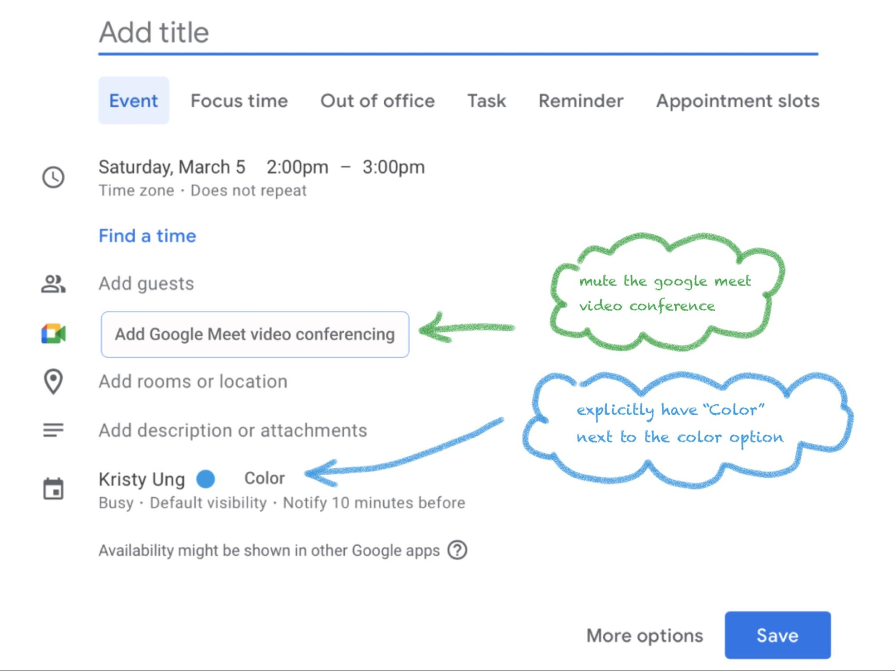

Google Calendar Redesign
Redesigning Google Calendar's Event Creation Interface
Background
Imagine you're a busy professional, juggling multiple tasks and appointments throughout the
day. You rely heavily on your Google Calendar to stay organized and on track, but its lackluster
interface does little to inspire or excite you about your upcoming events. To make matters
worse, the cluttered and overwhelming interface presents too many unnecessary options when
all you need is a streamlined and simplified approach.
For many individuals, keeping track of daily tasks and schedules is a necessary but often
tedious aspect of life. For example, students trying to balance schoolwork and extracurricular
activities or working professionals juggling multiple projects.
Using a calendar can help them stay organized and on track.
Problem
However, simply having a calendar is not enough - the challenge lies in maintaining the motivation
to stick to a schedule and finding excitement in the tasks at hand. This problem is especially
relevant in today's fast-paced world where distractions are plentiful and burnout is common.
As a student myself, I use Google Calendar to keep track of my class schedule, the times for office
hours for each class, meetings and interviews, upcoming events, etc. Even though I have everything
on my calendar, often I'll just not want to go to class or events. Calendars should inspire motivation
in individuals as much as they can being just calendars. For example, a friend told me she color codes
her classes and makes the ones that she doesn't like colors that she does like so she'll be motivated
to go to them.
This is what our Google Calendar redesign aims to address, offering more options for customizations
to meet both practical needs and aesthetic desires.
Most calendars look the same - how can we make Google Calendar different or special besides the fact
that it is convenient to use as part of the Google Suite of apps?
Project overview
Therefore, there is a need for a solution that not only provides a functional calendar but also encourages
users to stay engaged and motivated in their daily activities. This is important because most calendars focus
on functionality and less on how it looks.
This project was done in a group of six as a final project for DSGN 1: Design of Everyday Things. We all
participated in each of the parts of the project, and I mainly focused on the problems and trends we discovered
through the interviews we conducted through which we were able to brainstorm potential solutions, which my
group mates used to create prototypes.
User interviews
Since we wanted the scope of our project to be specific, we focused on the event creation functionality in Google
Calendar.
We first asked users questions to assess their background knowledge and current impressions of Google Calendar,
for example, their familiarity with and usage of it, what they think about the aesthetics and customizability
of the interface.
Some examples of questions:
- Are you familiar with Google Calendar? If so, how often do you use it in a week?
- Do you use any other online calendars? What functions would you want/expect Google Calendar to have for creating calendar events?
- What do you think about the overall layout of the event creating screen?
- Rate the aesthetics of the interface of Google Calendar
We also had users complete a specific task of creating an event with specified parameters. We then asked them to rate
the difficulty of this, and also took notes on what we observed as they were working on the task.
Task: Ask the interviewee to create an event for a lecture that occurs every Monday from 5 pm to 6
pm EST at York Hall in the color green. Also, add a description of the Room # and set a
notification for this event to occur every 10 minutes.
The main issues discovered through these interviews were:
- There was a split amongst interviewees about the aesthetic - some thought it was clean and simple, others thought it was cluttered and complicated
- Many users wanted more customization options
- The main difficulties surrounded not being able to find a button or a function being inconvenient
- Many interviewees complained about there being too many unnecessary features like the large Google Meet button
Existing calendars
Compared to existing calendar applications, Google Calendar is on the more functional and standardized
side, versus others that are more aesthetic and customizable. It is the most similar to Apple Calendar.
Redesign
On the event creation screen we created redesigns for a more simplified interface to address clutter and
improve the aesthetic, and implemented a time zone menu and time-to-leave feature.

One of the redesigns we created was one to reorder and hide features that the user does not use.
Not only does this create an interface tailored to their personal preferences, but can also mitigate
possible errors as the interface will be simpler and more convenient to select features they typically use.

Another redesign is a color wheel option. Google Calendar comes with a set palette of colors for users
to choose from. A color wheel allows the user to choose exactly what shade of what color they want.

Another redesign was just an overall simplification of the interface such as muting the colors and labelling
certain functions. This was mainly aimed toward the users who commented that the interface is too cluttered, especially
the Google Meet button.
Another redesign is an option to add or delete main event functions. It is similar to the redesign that allows users to
reorder and hide features.
Another redesign are dark mode and theme options to further customize the calendar interface. This makes it easier
for users to access directly rather than downloading an extension. We added dark mode specifically because everyone likes dark mode
now, and it also reduces eye strain. The theme import is just in case users want more than just a light and dark mode.

Another redesign is adding a map to the time zone feature, in order to make it less confusing and more visual for users
compared to choosing from a list of options.
Finally, the time-to-leave redesign is an extra feature that Google Calendar does not have that Apple Calendar does have that users
commented saying they like.
Reflection
- Interview users about the redesign
- Look at other competing calendars in more depth
- Build upon the focus on event creation - what about an option to search for events
- Actually implement this to a real prototype that users can use instead of just Figma prototypes